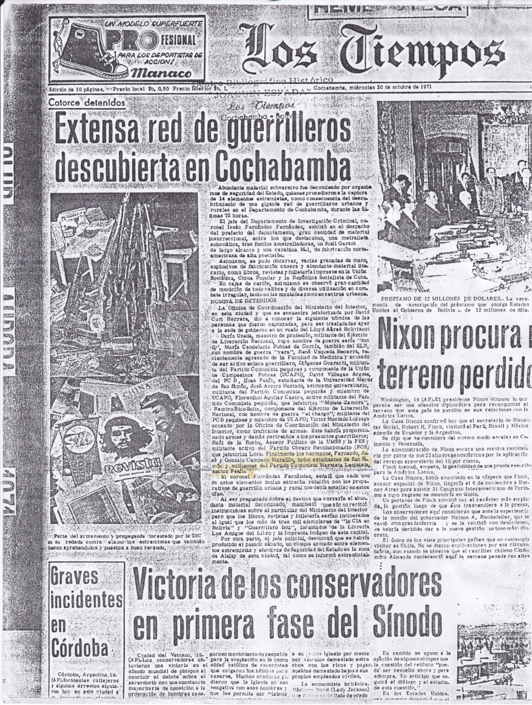
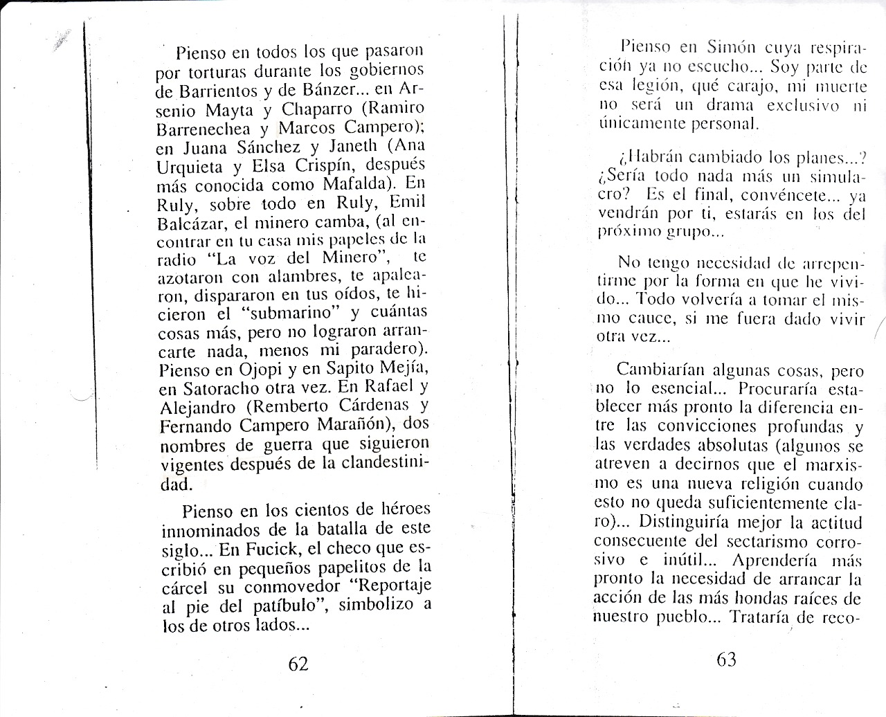
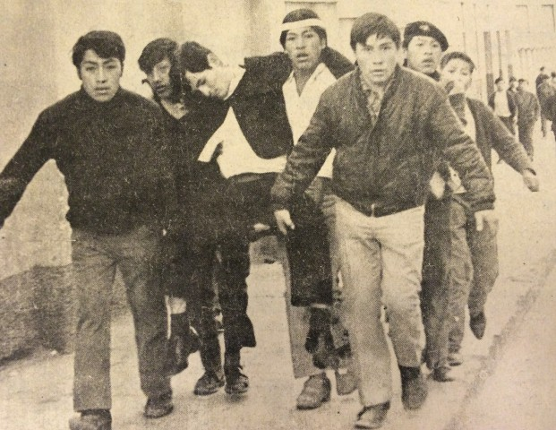
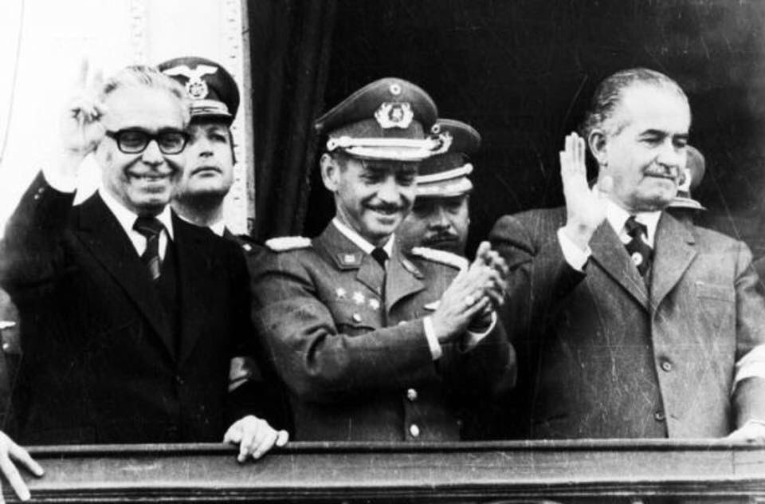

"Viva el Chato"
Viva su firmeza exclame para mis adentros. Era el dolor que había que convertirlo en victoria

Un 21 de agosto de 1971 se efectúa uno de los golpes más sangrientos generado por el aquel entonces coronel Hugo Banzer Suarez, en dicho golpe de estado varios revolucionarios desde sus distintas banderas de organizaciones crearon resistencia a la dictadura fascista durante esos largos años difíciles. Es a través de esta vía que lo que realmente se quiere hacer es rescatar la memoria histórica de una familia entera que vivió lo duro de la dictadura y que únicamente a partir de esta memoria histórica logremos valorar la democracia que vivimos y los logros alcanzados hasta la fecha, todos los hechos narrados acá han sido plasmados por la persona que vivió esa época y esa situación, hay más cosas que complementar pero como entenderán RECORDAR ESOS TIEMPOS NO ES FÁCIL, PERO ÉL LO CONSIDERA NECESARIO y han pasado varios años desde el momento en que decidió retomar la escritura de este documento.

Sobre los años difíciles.
Hace días una joven compañera me preguntaba “si cae el proceso que”, “no estamos preparados” y reflexionando en la posible respuesta, creí necesario hacer estas pocas líneas que siendo una vivencia personal siempre consideré como parte de nuestra historia colectiva, por ello, creí necesario responder la pregunta. Con mis entusiastas 15 años tuve mi primera vivencia con la militancia comunista, a esa edad, una fuerte sensación se apodero de mis impulsos y con muchos compañeros de colegio y hermanos consanguíneos organizamos el círculo necesario e imprescindible para ejercer la condición de comunista.
Fueron años difíciles para los luchadores sociales. En 1967 la presencia guerrillera comandada por el Che, la lucha de los trabajadores mineros, las movilizaciones universitarias y estudiantiles, hacían del panorama político social algo especial. La dictadura militar había desplegado sus fuerzas para reprimir y ahogar el descontento popular.

Nuestra organización especialmente universitaria y estudiantil demostraba una disciplina digna de un destacamento revolucionario, no había tarea o acuerdo que no se cumpliera: en la propaganda, la difusión de las consignas, los pintados de muros, las luminarias en el cerro, los afiches en las calles céntricas, los pegados de volantes, el volanteo en los mercados, los mítines relámpagos en las plazuelas, la edición de nuestro boletín, las reuniones educativas y formativas, la permanente emulación colectiva, la franqueza y la entrega sin retaceos hacían de nosotros jóvenes de temple y coraje, dispuestos a conquistar nuestra esperanza, el socialismo.
Fueron años de entrega plena, de iniciativas audaces, de grandeza de espíritu, de formación cotidiana, aun los menos allegados a la lectura tenían su tarea y se cumplía. La lectura –casi obligada- de “ Así se templo el acero”, “ La Madre”, “El Poema Pedagógico”, “Los Hermanos Karamasov”, “Reportaje al pie del patíbulo”, “la Revista Bohemia”, “La historia me absolverá “, el “Manifiesto Comunista “ eran lecturas ineludibles y necesarias para afirmar nuestras nacientes convicciones.

A esa edad no había que hacer mucho esfuerzo para darnos cuenta de las profundas diferencias sociales aun entre los jóvenes, la pobreza la insalubridad, el desempleo, la inseguridad en el futuro resultaban demasiado evidentes para no tomar parte en la acción.
Sin duda, el hecho internacional que estimulo más nuestro empeño fue la guerra de Vietnam. Las noticias traían informes de la criminal agresión imperialista contra ese heroico pueblo. Pocos jóvenes quedaban al margen de la condena a semejante monstruosidad. En homenaje a ese pueblo y su líder Ho Chi Minh organizamos lo que sería nuestra escuela de lucha. Con el Che siempre supimos que el enemigo existía, que mataba sin piedad y bombardeaba en otras latitudes, para someter a los pueblos.

Los vientos de libertad que se acumulaban en esta parte del continente a fines de la década de los 60, de manera particular en nuestra patria fueron extremadamente ricos en las posibilidades de avance político y social, se hablaba del primer soviet boliviano en sur América, se comentaba de la segunda Cuba, por ello, el imperialismo prestó singular importancia a los acontecimientos en nuestro país y muy pronto aplicando lo que hoy sabemos del genocida “Plan Cóndor”, desencadeno el golpe de estado del coronel Hugo Banzer en Agosto de 1971.
Resistir a los golpistas fue la tarea, desde el primer día, -Agosto 21 de 1971-, aunque no sabíamos bien cómo y con qué. Sin conocer la fuerza real del enemigo, ideamos planes de los más inverosímiles, quizá más próximos a la ficción que a la realidad, aquella propia de nuestra juventud, de nuestro coraje, porque si algo nos sobraba era aquello.

Pronto las cosas no podían estar peor, una organización que no está preparada para un cambio de accionar, de accionar legal, pasar a la absoluta clandestinidad, sin haber tomado las medidas oportunas y necesarias, fue como facilitarle las cosas al enemigo.
Nadie había hablado ni dicho nada de lo que serian los años siguientes al triunfo de la dictadura fascista de Banzer. Nos esperaban años de difícil lucha contra un enemigo capaz de matar, de torturar, que tenía todo el respaldo del imperio, que no dudo en llenar los cuarteles como campos de concentración, de hacer desaparecer a los detenidos, de allanar domicilios, de violar a las detenidas, de torturar con los métodos más sofisticados, el accionar de los grupos paramilitares, en suma el enemigo lo tenía todo previsto y nosotros nada.

La vanguardia nunca debe dejar de ser tal, preservar la organización es poner a disposición del pueblo el instrumento de defensa y la lucha para resistir y triunfar. Las masas por si solas no pueden y podrán derrotar a los regímenes dictatoriales, es imprescindible que sus destacamentos de vanguardia, sus activistas no partidarios, los grupos sociales más activos y más decididos tengan para sí, un espacio de actividad de preservación para hacer sostenible la lucha desde los sectores populares..
El 16 de octubre de 1971, empeoraron las cosas, Marcos C. (chaparro su nombre de organización) hermano de infancia y juegos, de escuela y colegio, salió temprano a cumplir la tarea de conseguir armas para resistir a la dictadura – así lo había acordado el partido- fue la última vez que lo vi salir en su bicicleta y caminar rápido para un encuentro que marcaría su vida por siempre, cayó en una emboscada que le tendieron los paramilitares de la dictadura, con apenas 17 años, hoy pienso que no tuvo mucho que meditar sobre los riesgos y sobre todo el tipo de operación que realizaba, la hora, el lugar, y verificar los contactos, es posible que quien dotaba de las supuestas armas era un agente de la dictadura y el escenario estaba preparado, lo detuvieron, fue sometido a inimaginables vejámenes y torturas, pretendieron aplicarle la ley de fuga, dos proyectiles de revolver no pudieron quitarle la vida, lo lanzaron de un segundo piso y se resistió a morir, en estado de coma lo internaron en el hospital Seton de nuestra ciudad(Cochabamba), con la columna vertebral cercenada lo tuvieron varios meses con guardias en la puerta de su habitación. Los criminales no satisfechos con lo procedido intentaron desaparecerlo sacándolo del hospital y eliminarlo, la acción decidida de las hermanas del hospital fue determinante para que Marcos nos acompañara hasta marzo del 2005, mes en que falleció a causa de un cáncer de colon.

He tenido muchos años para meditar sobre el hecho de Marcos, nuestro querido Chato, no en el ánimo de encontrar los culpables internos de su caída, ni los delincuentes paramilitares que ocasionaron sus lesiones y su parálisis. Han pasado años y el tiempo se cobro con aquellos sicarios al servicio del amo imperial, trágicas muertes rodearon el fin de cada uno, empezando la del general fascista Banzer y concluyendo con algunos de los que intervinieron en las torturas.
Los jóvenes están siempre dispuestos a acciones heroicas y peligrosas, pero cuan efectivas fueran estas en la lucha, si además del éxito en la operación no arriesgamos innecesariamente sus vidas. “En la lucha revolucionaria es importante que el enemigo sufra las bajas defendiendo sus posiciones y preservar la vida de nuestros combatientes”.

El 16 de octubre a las 2:30 de la madrugada un grupo de paramilitares fuertemente armados irrumpen en nuestra vivienda, luego de requisar todos los rincones en busca de armas del supuesto comando extremista, nos llevan presos a mí y dos hermanos, José Ramón C. y Gonzalo C. de 27 y 15 años respectivamente, este último fue uno de los menores de los miles de presos políticos que tuvo la dictadura, había terminado el segundo año de colegio. José, ya había concluido su carrera universitaria como ingeniero agrónomo. Los demás hermanos, militantes de la Juventud Comunista ya cumplían tareas de la organización en la clandestinidad en la ciudad de La paz. Antes de subirnos a las movilidades que aguardaban en la esquina del callejón donde vivíamos, nos enmanillaron y nos pusieron capuchas para no ver a nuestros captores. Camino a la casa de seguridad que dispusieron para los presos políticos, pensé en Marcos y me imagine lo peor, habíamos sido infiltrados y no se tomaron las medidas adecuadas para las acciones de resistencia, eran demasiado publicas algunas viviendas y no se tenía viviendas alternativas en caso de necesidad para asegurar nuestros compañeros más conocidos. Llegamos al lugar y sin quitarnos las manillas ni las capuchas nos introducen en una habitación grande, solo después pudimos ver que lo único que tenían era unos armarios empotrados en las gruesas paredes y en cada uno de ellos echados y doblados cabíamos uno en cada uno. Ninguno de los carceleros dijo nada hasta pasado el medio día, se nos saco uno por uno para que registraran nuestros nombres y pretender que asumamos ser parte de un comando subversivo, y pedían datos sobre las posibles acciones que debíamos ejecutar, allá empezó lo duro de las torturas para todo detenido, pretendían que nos auto incrimináramos y/o delatáramos más compañeros. Nuestros carceleros se frustraron, no lograron ninguno de sus objetivos y nos volvieron al armario empotrado con la amenaza de que en La Paz si hablaríamos.
Junto a otros compañeros, temprano el lunes por la mañana fuimos trasladados a La Paz en un vuelo comercial con fuerte escolta armada. Esa mañana los medios de prensa al servicio de la dictadura informaban del éxito de sus organismos de inteligencia al haber destruido un comando subversivo al servicio del castro comunismo internacional.
De manera directa desde el aeropuerto del Alto en La Paz, fuimos conducidos en las temibles vagonetas del DOP (Dirección de Orden Político), hasta Achocalla, antigua casa de piedra, testigo de innumerables muertes y tortura de luchadores revolucionarios. Una celda para los nueve que llegamos de Cochabamba, era de tres por dos metros. Recuerdo la disciplina y la solidaridad de todos para los turnos de dormir y la falta de frazadas en el frió altiplano paceño, comprendimos que apretándonos todos entrábamos de costado y podíamos dormir. Por razones de edad nos tuvieron juntos a Gonzalo y a mí. A José lo llevaron a otra celda junto a presos de otro departamento.
En esas condiciones habíamos llegado a algunas conclusiones, que Marcos había caído preso y lo habían asesinado –por el relato de otros presos que ese día oyeron las torturas y los dos tiros que luego certificaría el cirujano que lo intervino. A nosotros hasta ese momento se nos concedía el derecho de vivir.
Muy pronto nos asimilamos a la vida colectiva, compartimos obligaciones en el aseo, la preparación de los alimentos, traer agua, ayudar a las compañeras a elaborar pan. Siendo muchos y desconocidos los más, era muy difícil entrar en análisis de lo que sucedía en el país, los más antiguos y experimentados, particularmente los obreros y profesionales mayores servían de guía para nuestra conducta. Recuerdo que habían muchos estudiantes universitarios se podía percibir que pertenecían a otros partidos de izquierda, nos dimos la tarea de hacer útil nuestro encierro. Hacer ejercicios, trotar y tratar de integrar a los demás compañeros de celda, aprovechar al máximo el poco sol que nos permitían cuando nos tocaba la hora de salir al patio. Las noches se convertían en prolongadas sesiones de cuentos y relatos de todo tipo desde los de humor llano hasta los cuentos costumbristas de los compañeros de mayor edad.
Qué rica diversidad de experiencias y que importantes los veía a los compañeros mineros y fabriles, habían pocos campesinos, uno en el grupo que llegamos, que dicen estaba involucrado en tráfico de armas. Otros porque se declararon guerrilleros. Otros que fueron sorprendidos en una cantina, en fin, todos teníamos una historia, la que nunca se conoce plenamente.
Pasaron varias semanas y que alegría ver bajar por la pendiente del cerro a mis padres cargados con bolsas de pan y abrigo. Qué bueno saber que Marcos estaba vivo aunque después de varios meses recién se le permitió a mi madre poder verlo, la noticia nos alegro y lastimó a la vez al saber que quedaría parapléjico por siempre. “Viva el Chato”, viva su firmeza exclame para mis adentros. Era el dolor que había que convertirlo en victoria y alimentarnos de esa pequeña batalla ganada. Supimos por mi madre que el resto de mis hermanos estaban bien y que cada uno asumió la trinchera que la organización le había asignado.
A mediados del mes de diciembre del 71 nos cambian de prisión, fuimos trasladados al cuartel de Viacha, en el mismo altiplano frió. Nunca supe cuantos estábamos presos en el cuartel. Allá pudimos reconocer a compañeros de lucha y gente que nos conocía, con ellos y junto a los demás participamos activamente de la huelga de hambre demandando nuestra libertad. Esa experiencia me enseño que el carácter de clase de los presos determina su conducta, conocí actuaciones dignas, enaltecedoras de los valores de los revolucionarios, el humanismo más profundo y la solidaridad entre los presos.
En la lucha social la huelga solo triunfa cuando hay unidad en la acción y en los objetivos; se fortalece cuando todos alcanzan el grado de comprensión de hasta donde se puede avanzar con el movimiento. Presencié vacilaciones y miedo. Sabíamos que nada más podía sucedernos a todos si nos manteníamos unidos y sin retroceder en nuestra demanda: Exigíamos saber porque tantos miles estábamos presos sin proceso ni cargos formales y cuáles eran las acusaciones que pesaban sobre nosotros. Los huelguistas hicimos una carta al dictador haciendo conocer nuestras demandas y haciendo un llamado porque se tenga consideración con mujeres en gestación y con los menores que estaban recluidos.
Aprendí que cada huelga es diferente, que sus motivaciones las hacen distintas unas a otras, que todas sin excepción son un importantísimo instrumento en manos de los revolucionarios para generar conciencia sobre todo del valor de la unidad, de lo que significa el sacrificio. Estos eventos muestran a los actores de las mismas en disposición de lucha. Radicaliza el comportamiento de los dirigentes ya que tienen una acción próxima y vigilante de sus mandantes. Los comités de huelga deben ser electos por decisión de las bases y deben responder a ellas. Imponer normas de conducta y disciplina, particularmente la solidaridad. Sabemos que a través de los años se ha desgastado este medio de lucha de los explotados, corresponde a los luchadores sociales reivindicar este medio de lucha, restituir el impacto que ella debe generar, así en la defensa de los intereses sectoriales y generales de los participantes.
La dictadura tuvo que pasar trabajo para desmovilizar la huelga de hambre, esas noches hubo intenso movimiento de compañeros y compañeras, traslados a otros recintos carcelarios y amenazas de cambiar el régimen de reclusión si no se volvía a la normalidad, se prohibieron las visitas, se llevo a algunos compañeros al aislamiento completo, pero la huelga se hizo y tuvo efecto.
A nosotros nos trasladaron a la central, al DOP de la Plaza Murillo en la ciudad de La Paz. Hasta el mes de abril seguimos con la rutina, con los buenos y malos recuerdos de la actuación en la huelga de hambre. Entre los buenos, que podíamos aun estando presos hacer conocer nuestras demandas, las malas, la muerte en prisión del camarada Roberto Alvarado Daza, docente autor de innumerables estudios de filosofía y sobre la realidad nacional. Sucre perdía a uno de sus hijos más esclarecidos. Supimos del nacimiento de Libertad Bolivia hija de una militante de la Juventud Comunista. Otra mala, que no olvido era ver al compañero Roberto Moreira militante del Ejercito de Liberación Nacional ELN, torturado cruelmente hasta perder sus facultades mentales y ser manejado cual mascota por un oficial del regimiento, un hecho que indignaba y humillaba nuestra dignidad.
(Al compañero Moreira uno de los carceleros le colocaba su cinturón como correa al cuello e instruía que ladre y gruña cual una mascota domesticada y lo paseaba delante del resto de los presos) En el mes de Abril del 72 nos ponen en libertad, junto a Gonzalo, supimos después que organizaciones humanitarias fueron las encargadas de hacer las gestiones para nuestra libertad.
A los pocos días, la Jota (Juventud Comunista) hace contacto con nosotros y me asignan la tarea de salir de país. Gonzalo se queda en la ciudad de La Paz y concluiría en esa ciudad sus estudios hasta salir bachiller. La salida del país demoró porque no había condiciones para garantizar la seguridad de Marcos (Chaparro), se me informo que debía acompañarlo en el viaje hasta la ex –URSS.
Luego de un operativo y el consentimiento de las hermanas del Hospital se viabiliza el viaje. Lo cierto es que, la dictadura no quiso asumir ningún gasto de las curaciones de Marcos. La cuenta fue cuantiosa, mi madre ofreció dar su casa en pago, -pequeña casa rustica donde aún vive- finalmente los ruegos y las suplicas de Monseñor Walter Rosales y mi Madre permitieron la licencia para salir del hospital.
Mi objetivo era cuidar de Marcos en el viaje, que jamás lo pensé tan escabroso y largo. Salir clandestino con un enfermo en silla de ruedas y con sondas y temperatura permanente, se me hizo muy difícil. Llegamos al Aeropuerto de Buenos Aires, luego de esperar horas entendí que el contacto estaba mal coordinado –años después me enteré que el compañero que debía esperarnos estuvo todo el día anterior y que aguardo nuestra llegada en la Terminal.
Siempre pensé que algo tuvo que ver la diosa fortuna, sabía que con 15 dólares - era todo el dinero que llevábamos- tendría que medir muy bien mis gastos para cruzar el Atlántico y llegar a la ex –Unión Soviética.
Lo que pasmos en la Argentina es una historia larga y penosa, no es mi propósito recordar ni obligar al lector a conocer ese momento tal difícil, baste decir que no se me había instruido bien el santo y seña para con los compañeros Argentinos, que cuando me presento en el mostrador de la compañía aérea querían ver a Marcos al lado mío para dar credibilidad que éramos los del vuelo a Copenhague-Dinamarca. La fortuna iba con nosotros, se unió en el aeropuerto otro hermano, Francisco que estudiaba en la provincia de Córdoba. Los tres organizamos nuestra estadía hasta resolver el tema de los boletos en la línea aérea. Sin dinero y con mucha voluntad decidimos quedarnos en una hostal de una viejecita, que por esos días ocupo el rol de nuestra madre.
Nos dio alimento y vivienda y sentí que lo hacía con agrado porque le contamos lo sucedido y nuestras peripecias para seguir viaje. Insistí en el mostrador de la línea aérea y como no tenía el santo y seña adecuado no se me daba atención. Al final después de dos interminables días aparecen los amigos de la Juventud Comunista Argentina y damos solución a lo fundamental, continuar viaje.
Llegados a la ex – URSS, Marcos y yo nos atendimos de la salud, un año aproximadamente duro mi estadía en el país de los soviets, no fue poco lo que aprendí y vi de lo que podía ser el otro mundo por el que habíamos llegado tan lejos. Mi natal Bolivia era una más que luchaba por los nobles ideales de los grandes de la historia, como los de la gran guerra patria, los de playa Girón o los del Vietnam, no había latitud en la que los pobres no reivindicaran sus derechos y deseos de forjar un mundo diferente.
Compartí con jóvenes de casi todos los países y particularmente latinoamericanos, comprendí que las fronteras eran resultado de la división imperial, que las banderas y sus colores no reivindicaban los intereses más profundos de la humanidad. Pero, por sobre todas las cosas, supe que los pobres del mundo tienen un solo camino para su libertad: la lucha contra el enemigo de la humanidad, el imperialismo.
A mediados del 1973, ingreso clandestinamente al país, como todos, con la convicción de incorporarme a la lucha contra el fascismo, por tarea se me asigno incorporarme a la producción y ser obrero, trabaje en una fábrica de plásticos en la zona de Pura-Pura y pronto fuimos delegados de los trabajadores, derrotando así la imposición de la dictadura de designar coordinadores laborales entre los trabajadores, plan que había reglamentado por Decreto, llamado del Servicio Civil Obligatorio. Organismos que sustituían a los sindicatos o a los comités de base electos por los obreros.
El 1 de Mayo de 1974 rompiendo las limitaciones que impuso la dictadura fascista, participamos de la marcha de los trabajadores, repartimos volantes y gritamos consignas por la democracia y contra la dictadura, este hecho nos valió junto a Eduardo C. mi hermano mayor ser apresados y conducidos a la Dirección de Orden Político, próxima a la Plaza Murillo. Nuestra condición de trabajadores obligo a la dictadura a ponernos en libertad ese mismo mes el 18 de Mayo fecha que se celebra el día del trabajador fabril en nuestro país. Recuerdo unas pocas patadas y más amenazas como recibimiento en el centro carcelario. La dictadura recogió del las calles la panfletaria que se lanzó y nos la adjudicaron como prueba para nuestra detención, las preguntas de rigor y la insistencia de saber donde estaba la imprenta en la que se editaban los volantes, de la resistencia era lo que más les motivaba a nuestros captores. Ellos jamás supieron que con Eduardo tenían a uno de los responsables de tamaña ofensa a la dictadura. Salimos en libertad, perdí el trabajo y se decidió que sería un cuadro de la organización. Así, empezó lo que serian años de pleno trabajo partidario siempre en el país contribuyendo en algo a organizar la resistencia contra el fascismo.
La lucha clandestina fue quizá mi escuela principal ya que crecí y me forme en ella junto a muchos compañeros, no solo comunistas, sino también de otras tendencias ideológicas. La lucha por la unidad y la construcción de un frente democrático y anti – imperialista, eran las tareas políticas principales de la organización, en esta tarea conocí a los aguerridos trabajadores mineros y entre ellos a los comunistas de las minas, su fortaleza, su energía resultaban una transmisión de valores y de fe importantísimos. Los de Siglo XX, Catavi, Huanuni, San José, son centros mineros, campamentos que ratifican nuestro compromiso de lucha.
Adopte el nombre de Alejandro, necesario y obligatorio en la lucha clandestina, el que se ha extendido hasta hoy, lo usan en mi entorno familiar para nombrarme.
Cuando nos llegaba la noticia de que algún compañero había caído preso, se tensionaba toda la organización, sobre todo cuando caía alguno vinculado al aparato interno. Cuando el preso era de las filas obreras o fabriles la situación era más tranquila. Decenas de compañeros de esos sectores cayeron oponiéndose a la imposición de la dictadura. Aceptaban ser coordinadores o iban a la cárcel. Por ello es que las prisiones estaban pobladas de revolucionarios de manera continua.
La vida clandestina tiene sus normas y reglas muy rígidas la posibilidad de resistir eficientemente a la dictadura esta en relación a manejarse de acuerdo a ellas. Las dictaduras adquieren formas de acción determinadas, es importante para los luchadores sociales conocer su conducta, su accionar. La manera de actuar de los grupos operativos por lo general es la siguiente: tienen un equipo de elite, lo que ellos llaman la inteligencia, que recibe información de sus informantes, en los diferentes sectores de la actividad social, los hay entre los obreros, campesinos, universitarios, maestros, estudiantes o entre los intelectuales y profesionales, casi en todos los sectores, son sujetos que pasan informes regularmente y en torno a lo que ellos consideran grupos principales se establecen operativos para detenerlos o callarlos. También juegan ese papel de los empresarios que hacen la denuncia de forma directa a los organismos de seguridad.
Los casos más complicados son aquellos en los que los grupos de agentes de la dictadura sorprenden a los luchadores en una pinta de paredes, o pegado de afiches, en estos casos los compañeros deberán estar muy preparados para responder el interrogatorio que casi siempre gira en la detección de los responsables del grupo y la ubicación del equipo de prensa, nuestra historia nos enfrento a varios de estos casos en los años de lucha contra el fascismo.
Recuerdo el entusiasmo de los jóvenes compañeros de secundaria y universitarios por esta tarea. La experiencia nos dice que es importante estudiar adecuadamente el lugar, precisar puntualmente la hora de la acción, esta deberá ser siempre corta, muy ágil en su realización y terminar con la retirada de modo seguro y con alternativas diversas de escape. Una acción que no observe estas normas está expuesta al riesgo de ser interceptada por los organismos de la dictadura. Ello es provocado por la llamada de algún vecino si no el dueño del muro o la alarma de los guardias de seguridad privada a la policía. Estas han sido las vías por las que se nos obstaculiza una acción o terminan estas con la detención de los participantes.
Por no observar estas normas en la organización en febrero de 1977 fuimos víctimas de un operativo de los organismos de seguridad que abarco a varios departamentos y lograron darnos el golpe más grande en los largos años de la dictadura. Fue la tercera vez que caía preso y está en mi condición de responsable nacional de organización lo que me valió la más dura experiencia en mis años de lucha.
Algunos hechos nunca se precisaron ni creo que alguien lo haga, sobre todo por el tiempo transcurrido o porque algunos de los participantes ya no están en la lucha. Así que muchos testimonios no podrán recogerse y ordenar la secuencia de los hechos podría omitir aspectos esenciales.
Al informarnos de que habían sido detenidos compañeros de varios círculos de la universidad, intentamos poner a buen recaudo los organismos que no se los había tocado, advirtiendo a los compañeros de lo sucedido horas antes.
Mi detención fue por una delación que hasta hoy nunca supe quien la hizo, tampoco me interese por ello. Llegue a mi cuarto –que compartía con un compañero del partido- y ya la casa toda estaba tomada por los agentes de seguridad, apenas puse la llave para abrir la puerta y me cayeron encima cuatro matones, boca al suelo y empezaron los golpes de los profesionales de la tortura. Debo reconocer que descuide limpiar la habitación, no tendría que haber tenido sino cuadernos y libros de estudio universitarios, no así un equipo para revelar fotos mucho material escrito, muchos libros y textos de estudio de la escuela de cuadros, en fin lograron bastante material para sus necesidades y la pena fue que yo se los di de manera fácil.
Me condujeron a las dependencias del Ministerio del Interior, sótano del que ya tenía referencias por compañeros que pasaron por esas celdas, por todo lo que oí de los carceleros, nombres y direcciones comprendí que muchos jóvenes comunistas estábamos presos y se notaba que de algunos de ellos no habían logrado ninguna información. De entrada habíamos ganado una batalla importante, los comunistas presos constituimos un destacamento firme dispuesto a dar lucha aún en manos de la dictadura.
La primera fase es la de ablandamiento, la oferta generosa de que te perdonan la vida si cooperas, entonces ellos hacen saber sus necesidades de información. Ellos ya conocían mi cargo y responsabilidad dentro la organización, a partir de ello deseaban llegar a la dirección ejecutiva del Partido y saber los vínculos internacionales que teníamos con la ex – URSS y Cuba. Un pasaporte que tenia sellos de ingreso y salida de Venezuela y Argentina dificultaron mas el interrogatorio. Había que asumir lo que resultara necesario para cortar la cadena de detenciones y poner a buen resguardo los contactos que tenia con la dirección del partido. Sin dar mucha opción de equivoco futuro hice una historia creíble en términos de contactos, y sobre todo la prensa del partido, entendieron que a las buenas conmigo no funcionaba y que era un rojo, castro - comunista que no estaba dispuesto a cooperar.
La segunda fase sin duda la más dura, esta vez fue el propio jefe de la seguridad Guido Benavides –hoy preso en Chonchocoro por la justicia que ofreció ablandarme para que hablara porque según él los había estado mamando y que ya me pase de pendejo. Recuerdo su sentencia, “yo el director te va hacer hablar rojo de mierda”, y empezó el apaleamiento, como se canso muy rápido pidió ayuda de sus matones, al cabo de un buen rato de patadas y golpes de puño descansaron y empezaron los careos con los compañeros y compañeras que no habían podido resistir…Fue digno ver como algunas de las compañeras habían hecho al igual que yo de su detención una verdadera trinchera de lucha y estábamos dispuestos a dar dura batalla a nuestros torturadores. Vi pasar delante rostros con muestras de miedo y dolor como también otros de firmeza y dignidad rostros comunistas como aquellos que describía el inmortal Fusik.(Reportaje al pie de la horca –julius fusik) A mis captores les costó agotarme físicamente, mas no cedí conciencialemente un milímetro, los veía enanos, sanguijuelas sin moral hombres carroña, estaba frente a la degradación humana, por lo que jamás cedería a su presión, estaba cansado y débil pero fuerte y superior a los bestias que no se cansaban ni se daban por vencidos. Muy pronto comprendí que serian sesiones prolongadas y había que prepararse, visite varias veces el submarino improvisado con una olla enorme, porque podían introducirme casi hasta la mitad de mi cuerpo.
Enmanillado con las manos a la espalda podían dominarme entre tres con relativa facilidad y cada salida del agua era acompañada con golpes de palo y patadas, en medio de los submarinos, la picana eléctrica fue letal, comienzo a perder la conciencia y pasan rápidamente imágenes muy queridas, Marcos mi querido hermano, como había sufrido en sus pocos 17 años soportando los vejámenes de estas bestias. Así mojado me inclinan sobre un sillón y queda mi parte trasera expuesta a la picana y al palo, siento que me chorrea sangre por los glúteos, pararme por mi solo no puedo. Tuve un minuto para hacer un resumen de mi corta vida, concluí que había vivido lo suficiente y que otros continuarían nuestra lucha. Aprovecho de otro submarino para terminar todo ni hacer fuerza para salir de la gigantesca olla. Lo que viene después no se qué tiempo me separó del último intento de ahogo, recuerdo que desnudo me depositan en una celda, pase la noche más fría que tenga memoria en La paz.
A la mañana siguiente, desperté y me di cuenta que estaba con vida y que mis verdugos no me matarían, su mejor momento no lo aprovecharon. Por lo que había logrado una pequeña victoria personal contra la dictadura. La preparación de la tarea debe pasar necesariamente por la revisión de la misma, por los o el encargado que de ningún modo podrá avisar con anticipación, sólo horas antes y estar seguro de que todos los participantes estén en el momento de la determinación final. El lugar, lo determina la importancia de la zona o la convocatoria al sector social que se desee hacer. Antes de la acción todos los compañeros habrán limpiado plenamente sus viviendas y no tener una sola nota con nombres o direcciones que comprometan la seguridad de otros activistas. El mismo participante deberá estar sin ningún apunte o número telefónico anotado. Hoy día los celulares son una fuente muy propicia para dar al enemigo información sin uno proponérselo.
Estando en prisión, recuerdo que muchos compañeros fueron detenidos en estas acciones, recuerdo que todos los días en mi celda en solitario, temprano por la mañana escuchaba un silbido entonando la internacional, sabía que era alguien conocido que me traía noticias, en prisión ellas –las noticias- son como alimento conciencial importante, saber de los compañeros siempre en lenguaje cifrado, saber de la familia o de los cambios políticos que se operan es muy necesario. El compañero se llamaba Martín, nunca supe su apellido por razones obvias, meses después me enteré que cuando cayó preso tuvo una actitud ejemplar y digna de un revolucionario. Amén de los advertidos de cuidado con los soplones o los agentes que lo custodiaban cuando salía al baño, siempre silbando la marcha de los revolucionarios del mundo, mañana y tarde me hacía saber que mi soledad apenas era en los muros y que estábamos cada día más fuertes y próximos.
En las prisiones todas las celdas se comunican de algún modo, pero siempre tenga presente que es el lugar del enemigo y que podría estar escuchando las conversaciones de los compañeros. En prisión no se habla de temas que podrían comprometer las seguridad de la organización, menos con presos que no se conoce o nunca los vimos. Así fue que cuando me dejan tirado en mi celda los primeros días, me dejan con un preso e apellido Quispe, que hizo las veces de mi enfermero y me daba el alimento, recuerdo que tenía los glúteos como una compacta herida cuya costra sangraba y se pegaba a mi raído pantalón, las curaciones resultaban una pequeña tortura en esas condiciones. Y aquel “compañero” de celda muy pronto empezó preguntando o buscando información.
Esa primera semana, sucedieron hechos inusuales, entrando clandestinamente por la frontera peruana a su retorno de la ex -.URSS cae detenido el compañero Remberto Cárdenas, por ese entonces Secretario General de la organización. De manera especial para los dos se reabre la cárcel de Achocalla de La Paz, recinto en que ya había estado en 1971, esta vez éramos dos con una fuerte custodia de agentes de seguridad. Los momentos que nos sacaban para hacer nuestras necesidades los utilizábamos para reconstruir un poco todo lo sucedido. Enmanillados y bastante demacrados sabíamos que habíamos dado dura batalla victoriosa contra la dictadura. No cayó nadie más.
Un hecho importante de esos días fue la visita del compañero sacerdote Eugenio Bataglia, que enfrentándose a las amenazas de nuestros carceleros pudo testimoniar que los dos estábamos allí recluidos y con vida. No le permitieron que nos entrevistara pero el llevó la certeza de que éramos nosotros los que estábamos allí. Recuerdo que los víveres que nos trajo se quedaron con los carceleros, no obstante la insistencia de el de entregarnos.
Pasados dos meses como prueba de resistencia hacia nosotros, reabren para los dos la cárcel de Chonchocoro, antigua hacienda en el altiplano paceño, casi en ruinas, compartí meses en solitario con un ato de ovejas que dejaron sembrado gran cantidad de garrapatas contra las que había que pelear. Las manillas pesan mucho al cabo del tiempo de reclusión. Por esos días se produce otra visita, la de un cura nacional de nombre Ariano. Que lastima sentí por ese representante del pensamiento de la iglesia y que diferencia frente a otros sacerdotes y monjas que nos visitaron tiempo después. La lista de estos últimos es larga, en ellos reconocemos a verdaderos luchadores por la democracia. En la asistencia a los presos, así también en la ayuda humanitaria a los familiares que resultaban víctimas de la dictadura. Contra ellos curas dignos y leales a sus principios el fascismo también se ensañó expulsando a más de uno y luego eliminando físicamente a otros.
Por gestiones de organizaciones internacionales juveniles por el mes de septiembre recibimos la visita de Amnistía Internacional organismo internacional que tiene que ver con los detenidos de conciencia. Frente a ellos hice cuanta denuncia pude de todos los vejámenes de que fui objeto en manos de mis captores hasta donde pude denuncie los nombres de mis torturadores y las torturas a que fui sometido. El error o no, fue hacer esta denuncia frente a los agentes que acompañaban a la citada comisión internacional, lo que me valió mas encierro y nuevamente las manillas esta vez más ajustadas y en solitario.
Luego de meses de aislamiento tuvimos la visita de familiares de Remberto, fue del todo reconfortante, saber por ellos de nuestras familias y de los compañeros.
La denuncia internacional de nuestra detención obligo a la dictadura a terminar con nuestra incomunicación y con las manillas. Fui trasladado al recinto policial de la localidad de Viacha en celda común con cinco compañeros con los que reinicie cierta normalidad vida en prisión.
Antes de fin de año en visita del comisionado de la Cruz Roja Internacional, se me propuso acogerme al exilio. Nuestra decisión fue de mantenernos en las cárceles de nuestro país y desde esa trinchera luchar contra la dictadura, lo que les obligó a pasar mi caso a la justicia ordinaria y cambiarme de centro de reclusión al penal de San Pedro de La paz. Un número reducido de compañeros pasamos a esa dependencia carcelaria. Al cabo de pocos meses, cuando el pueblo obligó a la dictadura a decretar amnistía general e irrestricta y convocar a elecciones generales, recupero mi libertad.
Mi tercera reclusión, la más prolongada, me obliga a recordar a compañeras y compañeros cuya firmeza y coraje la dictadura nunca pudo doblegar, Elsa C., Remberto C., militantes comunistas ejemplares, algunos que continúan en la lucha.
En el recuerdo de cada preso de conciencia existen personajes que han vivido todos los días de encierro como propio, en mi caso es mi madre, Bertha M . Progenitora de diez, a la que la dictadura encarceló a cinco de sus hijos, y a uno de ellos a Marcos los torturadores lo postraron en silla de ruedas hasta el final de sus días. Siempre supe de sus sufrimientos, de la penurias que pasó por ver a sus hijos en prisión. Quizá uno nunca alcance a sentir y vivir lo que sufrió, el maltrato de los dictadores, las presiones que sobre ella ejercían, los insultos y el vejamen, las largas caminatas para pedir permiso para las visitas, el caminar de kilómetros para llegar con su aliento hasta la cárcel de Chonchocoro, no tengo una sola duda que desde su posición ella se convirtió en una luchadora mas contra el fascismo. De mis hermanos lo propio, su solidaridad fue permanente, y aportaron con lo que pudieron en la lucha contra la dictadura.
Nunca sume los días y los meses de mi encierro, siempre supe que todo tiempo en manos de los carceleros había que convertirlo en tiempo útil y que había que aprender a vivir los momentos que la vida nos impone como difíciles.
De los hechos narrados me separan casi cuatro décadas pido disculpas a compañeros que no los menciono y que fueron vitales en la lucha por la conquista de la democracia. Hoy junto a muchos de ellos continuamos en nuestra trinchera, a lado de nuestro pueblo y contribuyendo con lo que podemos a consolidar el proceso revolucionario que vive el país.
Cochabamba, 13 de enero de 2009
Fernando C. M. (Alejandro)